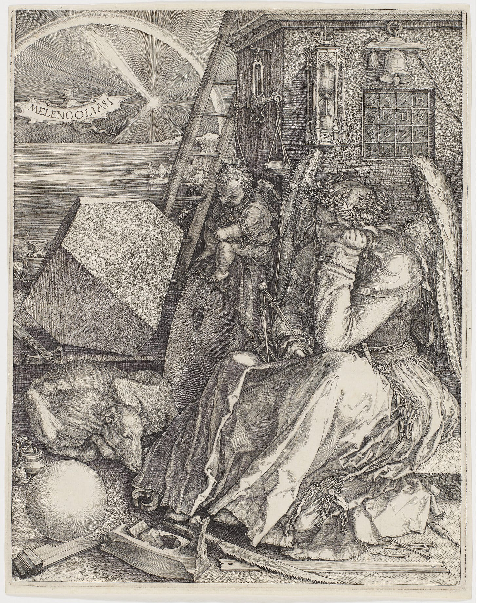

Activism and Activists
Harvesting the Force that Shapes Society. The Will for Meaning
Nietzsche described the fundamental drive he believed to shape all living things as the “Will to Power” - a dynamic force of growth, self-overcoming, and value creation, pushing beings to strive, transform, and assert themselves in the world.
I think there’s truth to it - but rather than being the fundamental force - it is one face of it, at least when it comes to humans. It is like describing the brain with only the amygdala, the preemptive system of our brain, while ignoring the cortex, and higher level, more modern part of it.
So, on top (or rather, next to) the will to power - lies another fundamental force that shapes our society. A society that its existence is rooted in the unknownness of the universe.
We were gifted with consciousness to observe and reason about our own existenceand about the universe - yet, from our limited observation - we are the only ones. This reality created the force that shapes our society - the Will to Meaning, to make sense of all of this.
That force, that “lacking” - created the ancient and medieval religions, as well as the modern ones. From the greatest empires and conquests, to the most sacred household and family connections. We came up with stories, institutions, ceremonies - all to fill the chasm of our reality - of being on a floating rock in the sea of nothingness and darkness.
Viktor Frankl, the author of “Man’s search for meaning” described the “Will to Meaning”, from the despair and existential vacuum he observed in his patients and in his own experiences, human beings crave a sense of purpose, a reason to live. If that sense of meaning is absent, psychological unrest or “existential frustration” follows.

The Will to Meaning is not a poetic idea - it is a civilizational technology. Shared meaning lets strangers trust each other, coordinate, sacrifice, and build institutions that outlive any individual. Religion did this with cosmology, law, ritual, belonging, and founding myths. Meaning turns this vacuum, this chaos, into obligation. It tells you what is worth suffering for, and who you are while suffering.
What does it have to do with Activism?
Once you grasp this raw force and aggregate it across a population, the chaos of the world makes much more sense. The ‘crazy’ and the ‘great’ alike stem from the same engine: the desperate, underlying drive to make sense of the void. But because this force is so potent, it is prone to extraction. The same machinery that builds communities can be engineered for obedience. The same hunger that raises cathedrals can be redirected into movements that prize loyalty over truth. Meaning is fuel, and systems naturally learn to run on it.
Activism is the form of extracting that raw force, and applying it to a collective blurb. Instead of filling the gap in one’s existence with an individualistic pursuit of meaning, one’s filling that gap with an external one. A lot falls into that - including religions, patriotism, environmentalism, Queers for Palestine, etc.
While not necessarily a bad thing, it is often being harvested by others, powerful minds, to steer society.
It is okay to choose a mission, an ideal to contribute your meaning-seeking force to, but do it willingly and consciously - because society’s direction is at stake here - and so we might as well live in a better world.
— Adam